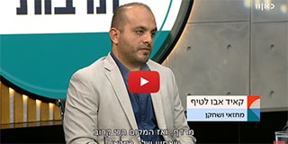

קישור חיצוני: בוגר בשטח: קאיד אבו לטיף, יזם וחוקר תרבות

בוגר בשטח: קאיד אבו לטיף, יזם וחוקר תרבות
2021-12-26
חזרה לחדשות מרכז מנדל למנהיגות בנגב
2021-12-26
קישור חיצוני: בוגר בשטח: קאיד אבו לטיף, יזם וחוקר תרבות